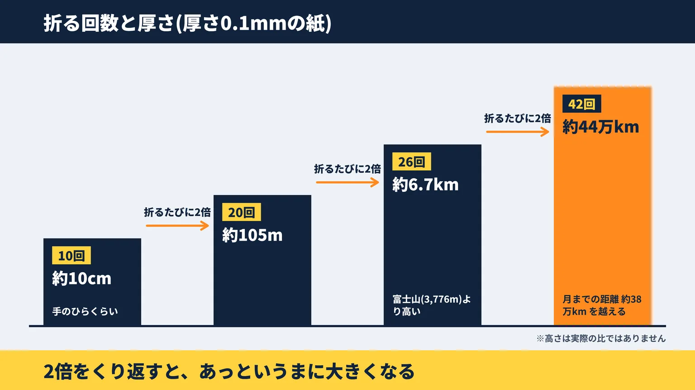

折るたびに、厚さは2倍
厚さ0.1mmの紙(コピー用紙は、だいたいこのくらい)を、半分に折ってみよう。1回折ると2枚重ねで、厚さは0.2mm。もう1回折ると4枚重ねで0.4mm。折るたびに、重なる枚数が2倍になっていく。
| 折る回数 | 重なる枚数 | 厚さ |
| 1回 | 2枚 | 0.2mm |
| 2回 | 4枚 | 0.4mm |
| 3回 | 8枚 | 0.8mm |
| 5回 | 32枚 | 3.2mm |
| 10回 | 1024枚 | 約10cm |
n 回折ると、2n枚重なる。10回なら 210 = 1024枚で、厚さは約10cm。ここまでは、手のひらにのる大きさだ。
厚さ0.1mmの紙を折り続けると、厚さが身長(約1.7m)を超えるのは、何回目だろう。電卓で、0.1mmに2を何回かけたかを数えながら、確かめてみよう。
答え合わせ：15回目。14回で約1.6m、15回で約3.3mになる。
26回で、富士山を追い越す
ここからが、2倍をくり返す計算のおもしろいところだ。
| 20回 | 約105m |
| 25回 | 約3355m |
| 26回 | 約6711m |
| 30回 | 約107km |
20回で約105m、25回で約3.4km。25回目の時点では、まだ富士山(標高3776m)に届かない。ところが、あと1回折って26回にすると、約6.7kmになり、富士山を追い越す。30回では約107km。宇宙の入口といわれる高さ(約100km)を越えてしまう。
42回で、月に届く
地球から月までの距離は、約38万km(平均で約384,400km)。さて、何回で届くだろうか。
| 41回 | 約22万km |
| 42回 | 約44万km |
| 月までの距離 | 約38万km |
41回では約22万kmで、月には届かない。ところが、あと1回折って42回にすると、約44万kmになり、月を越える。

41回から42回で増えた厚さは、約22万km。折るたびに、それまでの全部の厚さと同じだけ増えるので、最後の1回が、いちばん大きく増える。
紙の厚さが、半分の0.05mmだったら、月に届くのは何回目になるだろう。
答え合わせ：43回目。厚さが半分でも、必要な回数は1回増えるだけである。2倍をくり返す増え方は、出発点が半分になっても、1回分の差にしかならない。
本当に42回、折れるのか
もちろん、現実にはこうはいかない。紙は、折るたびに厚さが2倍になるだけでなく、折れる方向の長さが半分になる。A4用紙(長さ297mm)を同じ向きに折り続けると、計算上は7回目で長さが約2.3mmになる。いっぽう、厚さは約12.8mmだ。厚さのほうが長さより大きくなってしまい、もう折れない。
「紙は7〜8回までしか折れない」と言われてきたのは、このためだ。
ところが、2002年1月27日、当時高校生だったブリトニー・ギャリヴァンさんが、長さ約1.2km(4000フィート)のトイレットペーパーを使って、同じ向きに12回折ることに成功した。ギネス世界記録にも登録されている。彼女は、折るたびに紙の端が丸くなって長さが失われることを考えて、必要な長さを式で求めてから挑戦したという。12回折ると、212 = 4096枚重ねになる。
その後、アメリカの学校の生徒と先生のグループが、約4km(13,000フィート)の紙を使って、13回折ったと主張している。それでも、42回となると、必要な紙の長さが桁違いに長くなる。月まで届く折り紙は、計算の中だけの話なのだ。
まとめ
折るたびに2倍になる計算を、くり返してみた。10回で約10cm、26回で富士山を越え、42回で月を越える。2倍をくり返す増え方は、私たちの感覚をはるかに超えて、あっというまに大きくなる。
計算では42回で月に届くが、現実に折れるのは12回まで。数学の答えと現実のちがいを知ることも、数学のおもしろさである。
- 折る回数が1回増えると、厚さは何倍になるだろう。
- 7回折ると、厚さは何倍になっているだろう。(27を計算してみよう)
- 身のまわりで、「倍々」に増えるものを探してみよう。